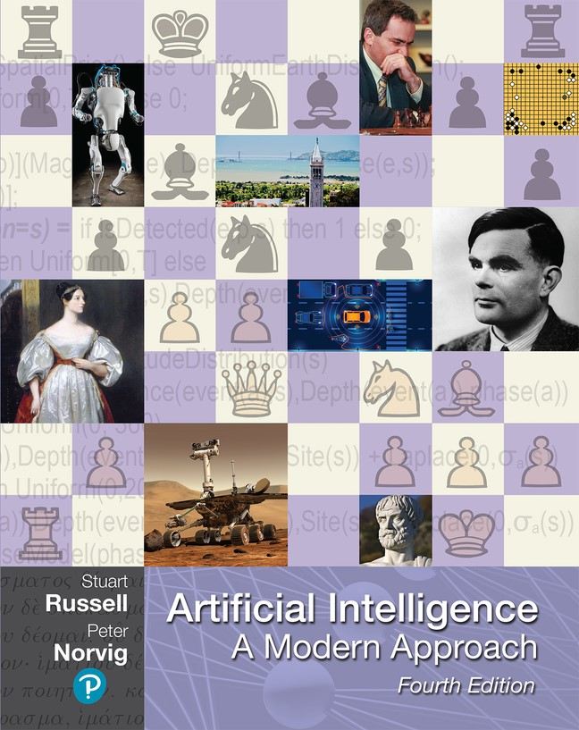

<!DOCTYPE html>
<html lang="en"><!DOCTYPE html>
  <html lang="en">
    <head>
      <title>Ruairí O'Reilly - Academic Profile</title>
      <link rel="shortcut icon" type="image/jpg" href="./img/favicon.ico">
      <meta charset="utf-8">
      <meta name="viewport" content="width=device-width, initial-scale=1">
      <link href="https://cdn.jsdelivr.net/npm/bootstrap@5.0.2/dist/css/bootstrap.min.css" rel="stylesheet" integrity="sha384-EVSTQN3/azprG1Anm3QDgpJLIm9Nao0Yz1ztcQTwFspd3yD65VohhpuuCOmLASjC" crossorigin="anonymous">
      <script src="https://cdn.jsdelivr.net/npm/@popperjs/core@2.9.2/dist/umd/popper.min.js" integrity="sha384-IQsoLXl5PILFhosVNubq5LC7Qb9DXgDA9i+tQ8Zj3iwWAwPtgFTxbJ8NT4GN1R8p" crossorigin="anonymous"></script>
      <script src="https://cdn.jsdelivr.net/npm/bootstrap@5.0.2/dist/js/bootstrap.min.js" integrity="sha384-cVKIPhGWiC2Al4u+LWgxfKTRIcfu0JTxR+EQDz/bgldoEyl4H0zUF0QKbrJ0EcQF" crossorigin="anonymous"></script>
      <style type="text/css">
        .fakeimg {
        	height: 200px;
        	background: #aaa;
        	}
      </style>
    </head>
  </html>
  <body>
    <div class="container">
      <nav class="navbar navbar-expand-sm bg-dark navbar-dark">
        <div class="container-fluid"><a class="navbar-brand" href="./index.html">Home</a>
          <button class="navbar-toggler" type="button" data-bs-toggle="collapse" data-bs-target="#navbarSupportedContent" aria-controls="navbarSupportedContent" aria-expanded="false" aria-label="Toggle navigation"><span class="navbar-toggler-icon"></span></button>
          <div class="collapse navbar-collapse" id="navbarSupportedContent">
            <ul class="navbar-nav me-auto mb-2 mb-lg-0">
              <li class="nav-item"><a class="nav-link" href="./teaching.html">Teaching</a></li>
              <li class="nav-item"><a class="nav-link" href="./research.html">Research</a></li>
              <li class="nav-item"><a class="nav-link" href="./pub.html">Publications</a></li>
              <li class="nav-item"><a class="nav-link" href="./about.html">About</a></li>
              <li class="nav-item"><a class="nav-link" href="./talks.html">Talks</a></li>
              <li class="nav-item"><a class="nav-link" href="./tools.html">Tools</a></li>
            </ul>
          </div>
        </div>
      </nav>
    </div>
    <div class="container" style="margin-top:30px">
      <div class="row">
        <div class="col-sm-4">
          <h4>Ruairí O'Reilly, Ph.D.</h4>
          <p>Ruairí is a lecturer in the Department of Computer Science at Munster Technological University. Ruairí graduated with a BSc in Computer Science (2008) and a PhD in Computer Science (2015) from University College Cork. The focus if his research is on artificial intelligence, distributed systems, e-health and affective computing.</p>
          <h5>Connect</h5><a href="https://www.linkedin.com/in/rdoreilly/"></a><a href="https://twitter.com/RuairiCS"></a>
          <h5>Collaborate</h5><a href="https://www.researchgate.net/profile/Ruairi_Oreilly2"></a><a href="https://orcid.org/0000-0001-7990-3461"></a><a href="https://scholar.google.com/citations?user=86x5oQgAAAAJ&amp;hl=en"></a>
          <h5>Contact</h5><a href="mailto:ruairi.oreilly@mtu.ie"></a><a href="mailto:ruairi.oreilly@mtu.ie">ruairi.oreilly@mtu.ie</a>
        </div>
        <div class="col-sm-8">
          <ul>
            <li><a href="#knowledgeRepresentation">Knowledge Representation (Sep -> Dec)</a></li>
            <li><a href="#interactiveDataVisualisation">Interactive Data Visualisation (Jan -> May)</a></li>
          </ul><br>
          <h4 id="knowledgeRepresentation">Knowledge Representation (Semester 1)</h4>
          <p> Knowledge representation and reasoning (KR) is a field of AI that focuses on the representation of domain specific knowledge in a form that can be utilised by computer systems. Knowledge representations within a domain are often conceived as formalisms, a description of something in formal mathematical or logical terms. This module will introduce students to methodologies for the visualisation and interpretation of domain specific knowledge and the translation of interpretations into KR formalisms. It will provide the student with an appreciation of how to evaluate the suitability of knowledge representation schemes, balance competing features/requirements and make informed decisions when designing KR formalisms. The module will also focus on the application of KR to appropriate real world problems such as the semantic web, time-series indexing and temporal abstraction of expert knowledge.</p>
          <p>Recommended Reading:</p>
          <div class="row">
            <div class="col-4">
              <p>"Artificial Intelligence: A Modern Approach (Third edition)" by Stuart Russell and Peter Norvig</p>
            </div>
            <div class="col-4"></div>
          </div><br>
          <div class="row">
            <div class="col-4">
              <p>"Hands-On Machine Learning with Scikit-Learn, Keras, and TensorFlow: Concepts, Tools, and Techniques to Build Intelligent Systems (2nd Edition)" by Aurélien Géron</p>
            </div>
            <div class="col-4"></div>
          </div><br>
          <h4 id="interactiveDataVisualisation">Interactive Data Visualisation (Semester 2)</h4>
          <p>Web based data visualisation technology is a critical component of modern web applications. In this module the student will learn how to identify and apply a suitable visualisation technique for a data source. It will enable students to create visualisations of data for the web as well as the ability to incorporate interactive functionality to enhance data analysis.</p>
          <p>Recommended Reading:
            <div class="row">
              <div class="col-4">
                <p>"D3.js in Action (Second edition)" by Elijah Meeks</p>
              </div>
              <div class="col-4"></div>
            </div><br>
            <div class="row">
              <div class="col-4">
                <p>"Eloquent Javascript (Third edition)" by Marijn Haverbeke (free pdf available)</p>
              </div>
              <div class="col-4"></div>
            </div><br>
          </p>
        </div>
      </div>
    </div>
    <footer>
      <div class="container">
        <div class="row">
          <div class="col-sm-4"></div>
          <div class="col-sm-4"></div>
          <div class="col-sm-4"></div>
        </div>
      </div>
    </footer>
  </body>
</html>